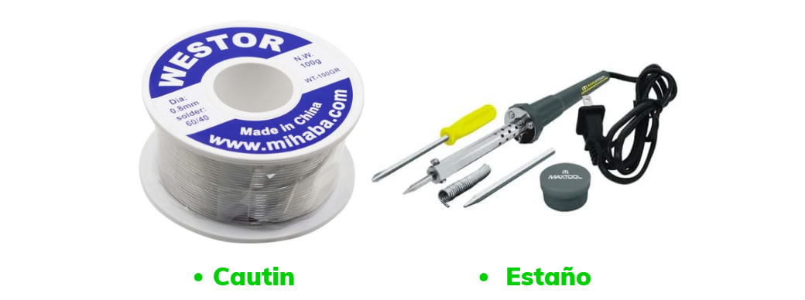
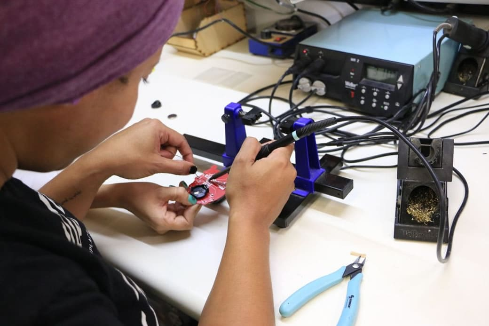

La soldadura con estaño y cautín es un proceso utilizado para unir componentes electrónicos. El estaño es un metal blando, generalmente en forma de hilo, que se funde a baja temperatura. El cautín, también conocido como soldador, es una herramienta que se calienta para derretir el estaño y permitir su aplicación sobre las conexiones.
Materiales:

Para soldar cables, se sigue este proceso:
Se limpia la superficie de los cables para asegurar una buena conexión.
Se calienta el cautín y se aplica estaño a la punta para mejorar la transferencia de calor.
Se coloca el cautín sobre los cables y se añade estaño fundido hasta que cubra las superficies de contacto.
Se retira el cautín y se deja enfriar el estaño, formando una conexión sólida y conductora.
Este proceso se realizó con el objetivo de extender los cables y mantener un circuito más ordenado, mejorando la organización y la eficiencia del sistema.
Nota:
El cautín generalmente se calienta a una temperatura entre 350°C y 400°C (660°F a 750°F) para soldar con estaño. Esta temperatura es suficiente para fundir el estaño y permitir una soldadura adecuada sin dañar los componentes electrónicos. Es importante ajustar la temperatura según el tipo de estaño y el trabajo específico para obtener los mejores resultados.

Prueba de led
Durante la prueba del LED para la maceta, inicialmente utilizamos un LED de 12 voltios, pero no funcionó. Posteriormente, probamos con un LED de 5 voltios, que sí encendió. Esta prueba nos permitió identificar el cable positivo y el cable negativo, lo cual es esencial para diferenciar la polaridad. Esta identificación es crucial para asegurar una correcta conexión con la bomba y otros componentes electrónicos del sistema, garantizando su funcionamiento adecuado y seguro.